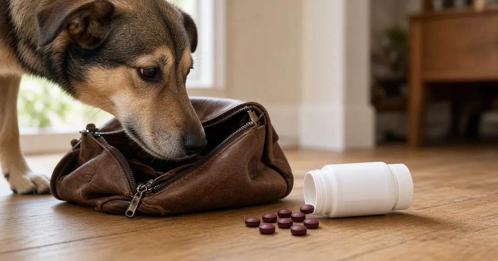

If your dog or cat ate iron pills, prenatal vitamins, or a multivitamin with iron, call an animal poison control center or your vet now, even if your pet seems fine. Go straight to an emergency vet if your pet has vomited blood, has bloody or black stool, or seems very weak. Use the iron calculator to estimate the dose.
Enter weight, the iron on the label, and how many. Get an urgency level and next steps. There is no "safe" result.

How the iron calculator sorts results. Doses are mg of elemental iron per kg of body weight, the same for dogs and cats.
For a 20 lb (9 kg) dog, 20 mg per kg is about 181 mg of elemental iron, roughly 3 tablets labeled Iron 65 mg. Over 60 mg per kg is more than about 544 mg, roughly 9 of those tablets. A 10 lb (4.5 kg) cat or dog reaches each level with half as much.
Sources: ASPCA Animal Poison Control Center, Merck Veterinary Manual. Use the "Iron" line on Supplement Facts. This graphic is not a substitute for a call to your vet or a poison control line.
What to Do Right Now
- Take away the bottle and count what is missing. Use the higher number if you are not sure.
- Find the "Iron" line on the Supplement Facts label. A 325 mg ferrous sulfate tablet usually lists Iron 65 mg.
- Call ASPCA Animal Poison Control, Pet Poison Helpline, or your vet.
- Do not make your pet vomit unless a professional tells you to.
- Go to an emergency vet if your pet vomits blood, has bloody or black stool, or seems weak or pale.
How Much Iron Is Toxic?
What matters is elemental iron, the amount listed as "Iron" on Supplement Facts. Iron in pills is bound to a salt such as ferrous sulfate, so only part of the tablet weight is iron. According to the ASPCA Animal Poison Control Center and the Merck Veterinary Manual, toxic effects are not expected under 20 mg of elemental iron per kg in healthy dogs and cats, mild stomach and gut signs are possible at 20 to 60 mg per kg, serious poisoning can develop above 60 mg per kg, and 100 to 200 mg per kg is potentially lethal without treatment.
The iron calculator sorts under 20 mg per kg as contact a professional now, 20 to 60 mg per kg as Urgent, and over 60 mg per kg as an Emergency. Bloody vomit or stool, or weakness, is an Emergency at any dose. If the label gives only the salt, the calculator counts ferrous sulfate at 37%, ferrous fumarate at 33%, and ferrous gluconate at 12% iron.
Where Iron Hides
- Iron pills: ferrous sulfate, fumarate, and gluconate tablets.
- Prenatal vitamins and multivitamins: often contain iron. Some also contain vitamin D. See the vitamin D guide.
- Oxygen absorber packets: the small packets in jerky and snacks, and some hand warmers, contain iron. Call poison control if your pet chewed one.
Dogs vs Cats: What Is Different
- Dose data: the published ranges are the same for dogs and cats.
- How they get it: dogs chew through bottles and eat pills from bags and purses. Cats eat iron less often.
- Size: a small dog or a cat reaches the Urgent and Emergency ranges with just a few tablets.
Symptoms and Timeline
- 0 to 6 hours: vomiting and diarrhea, sometimes bloody, belly pain, and tiredness.
- 6 to 24 hours: your pet may seem better while iron is still moving into the organs. This quiet period does not mean your pet is safe.
- 12 to 96 hours: in serious cases, vomiting returns, with shock, liver injury, and bleeding problems.
- 2 to 6 weeks: scarring can narrow the stomach or gut.
Go Straight to an Emergency Vet If
- Your pet has vomited blood or has bloody or black stool
- Your pet is weak, pale, or collapsing
- The calculator shows Emergency
- Poison control or your vet has told you to come in
What the Vet May Do
Activated charcoal does not bind iron, so the first steps are usually making your pet vomit if it was recent, medicines to protect the stomach, and bloodwork 4 to 6 hours after the pills were eaten to measure iron. Serious cases may need IV fluids, liver support, and a medicine that binds iron in the blood.
How to Prevent It
- Keep iron pills and vitamins in a closed cabinet, not in a purse, bag, or pill organizer on a low surface.
- Close child-resistant caps fully. Dogs can chew through bottles.
- Throw away oxygen absorber packets from snack bags in a lidded bin.
- Ask guests to keep bags up high or in a closed room.
Related: vitamin D, Tylenol (acetaminophen), and ibuprofen. For a room-by-room list, see the pet poison-proofing checklist.
Enter weight, the iron on the label, and how many. Get an urgency level and next steps. There is no "safe" result.
Frequently Asked Questions
My dog ate iron pills. What should I do?
Call poison control or your vet now, even if your dog seems fine. Have the bottle ready with the "Iron" amount per tablet and how many are missing. Go in right away if your dog vomits blood, has black stool, or seems weak.
How much iron is toxic to a dog?
Under 20 mg of elemental iron per kg is not expected to cause toxic effects in a healthy dog. From 20 to 60 mg per kg, stomach upset is possible, and above 60 mg per kg serious poisoning can develop. A common 325 mg ferrous sulfate tablet has about 65 mg of elemental iron.
My dog ate a prenatal vitamin. Is that dangerous?
Prenatal vitamins often contain more iron than regular multivitamins. Check the "Iron" line on the label, enter it in the iron calculator with your dog's weight, and call poison control.
My dog seems fine after eating iron pills. Can I wait?
No. Call poison control or your vet now. Iron poisoning can look like it is getting better before the serious stage begins, and treatment works best early.
What is elemental iron?
Iron in pills is bound to a salt such as ferrous sulfate. Only part of that weight is iron. The "Iron" line on Supplement Facts already gives the elemental amount, so use it when you can.